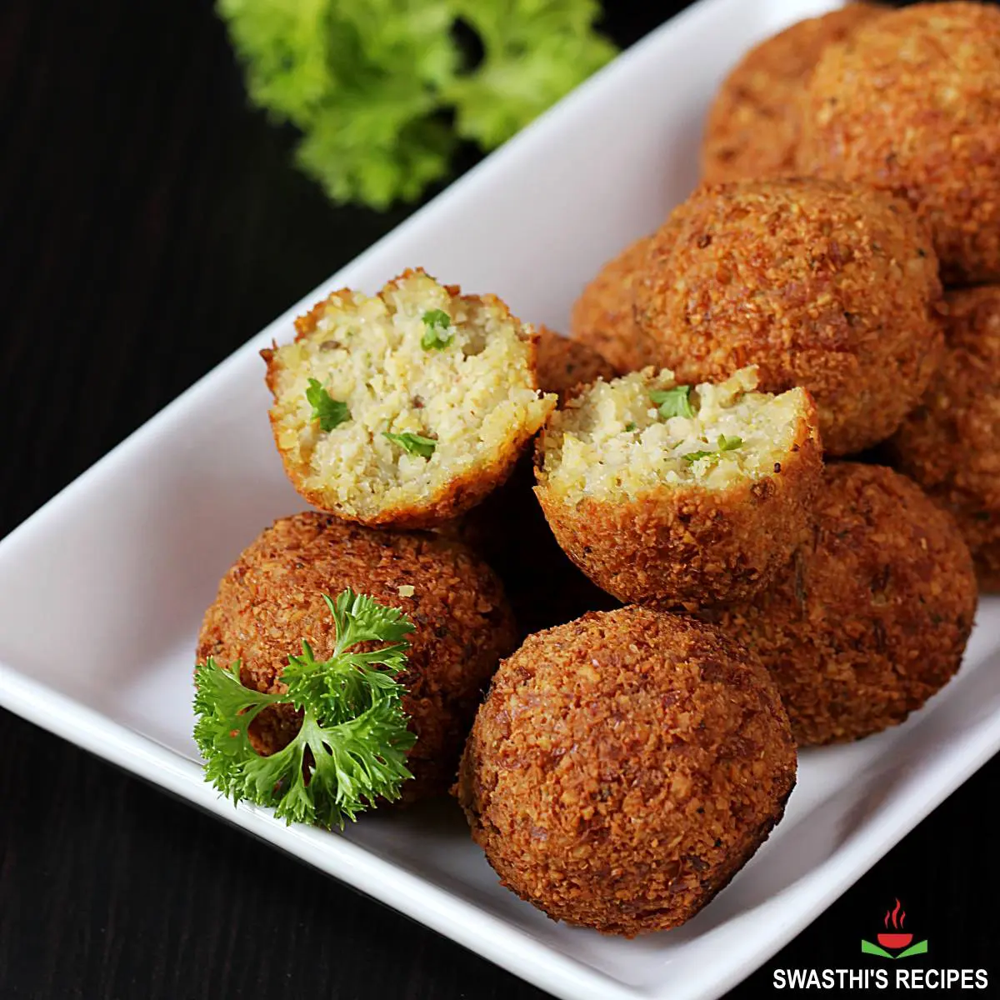

Falafel

What is Falafel?
Falafel is a traditional Middle Eastern dish made from ground chickpeas, fava beans, or a combination of both. The mixture is seasoned with various herbs and spices, including garlic, parsley, cumin, and coriander. The seasoned mixture is then formed into balls or patties and deep-fried until crispy and golden brown on the outside.
Falafel is commonly served in pita bread or flatbreads, often accompanied by toppings such as tahini sauce, hummus, fresh vegetables (like tomatoes, cucumbers, and lettuce), pickles, and sometimes hot sauce. It can also be served as part of a mezze platter alongside other dishes such as hummus, baba ghanoush, and tabbouleh.
Falafel is popular as a vegetarian and vegan option, providing a rich source of protein and fiber. It has become a beloved street food and is enjoyed in many countries around the world.
Ingredients
- Chickpeas (1 ¾ cups dried chickpeas, soaked overnight, or 2 cans of chickpeas, drained and rinsed)
- Onion (1 small onion, roughly chopped)
- Garlic (3-4 cloves, roughly chopped)
- Fresh Parsley (½ cup, packed)
- Fresh Cilantro (½ cup, packed)
- Ground Cumin (1 teaspoon)
- Ground Coriander (1 teaspoon)
- Salt (1 teaspoon)
- Baking Powder (1 teaspoon)
- Flour (1-2 tablespoons, as needed)
- Black Pepper (to taste)
- Cayenne Pepper (optional, to taste)
- Vegetable Oil (for frying)
Instructions
- Soak Chickpeas: If using dried chickpeas, soak them in water overnight. Drain and rinse them before using.
- Blend Ingredients: In a food processor, combine the soaked chickpeas, onion, garlic, parsley, cilantro, cumin, coriander, salt, black pepper, and cayenne pepper (if using). Pulse until the mixture is well combined but still slightly coarse. You may need to scrape down the sides of the processor a few times.
- Add Baking Powder and Flour: Transfer the mixture to a bowl. Stir in the baking powder. Add flour, one tablespoon at a time, until the mixture holds together when formed into a ball.
- Shape Falafel: Using your hands or a falafel scoop, form the mixture into small balls or patties, about the size of a golf ball.
- Fry Falafel: Heat vegetable oil in a deep pan or fryer to 350°F (175°C). Carefully add the falafel balls in batches, making sure not to overcrowd the pan. Fry until golden brown and crispy, about 3-4 minutes per side. Remove with a slotted spoon and drain on paper towels.
- Serve: Serve the falafel warm, in pita bread with toppings like tahini sauce, hummus, chopped vegetables, pickles, and hot sauce, or as part of a mezze platter.